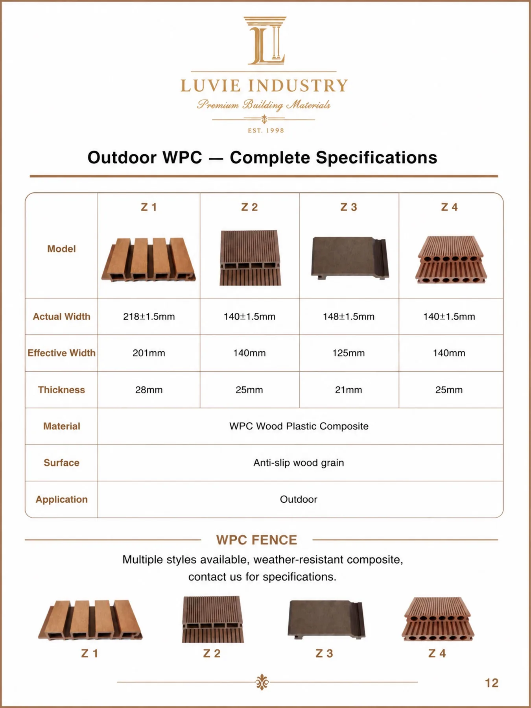

Outdoor WPC should be bought as a system, not as a colour chip. The board section affects effective coverage, the fixing arrangement and the product story your customer receives.
Before discussing a container price, establish where the board sits: deck surface, light-traffic path, terrace or vertical cladding. Then request the installation system and sample the actual profile.
Separate actual width from installed coverage
The catalogue distinguishes actual and effective width—an important distinction for sales calculations and quotations. A board’s face size may not equal the area it covers after the joint is formed.
Ask for the confirmed usable coverage, board length, clip/fastener requirement and recommended substructure specification for the selected model.

| Catalogue model | Actual / effective width | Thickness | Stated surface / application |
|---|---|---|---|
| Z1 | 218 ±1.5 / 201 mm | 28 mm | Anti-slip wood grain; outdoor |
| Z2 | 140 ±1.5 / 140 mm | 25 mm | Anti-slip wood grain; outdoor |
| Z3 | 148 ±1.5 / 125 mm | 21 mm | Anti-slip wood grain; outdoor |
| Z4 | 140 ±1.5 / 140 mm | 25 mm | Anti-slip wood grain; outdoor |
The board is only one part of the installed system
A deck quote is incomplete if it names only the board. Ask for the related clips or fasteners, starting and finishing details, substructure recommendation, expansion / joint guidance and installation sequence for the selected profile.
This is not about making claims for a particular project; it gives your sales team a way to recognise when an enquiry needs technical confirmation rather than a quick price.
| Commercial item | What to confirm before quotation |
|---|---|
| Board | Model, actual and effective width, thickness, length, finish and approved colour reference. |
| Accessories | Clip / fastener type, start / end details, coverage per accessory pack and whether they are included. |
| Installation boundary | Intended use, support / framing requirement, edge treatment and which conditions require local technical review. |
| Packing | Boards per carton, carton dimensions, gross weight, pallet treatment and handling protection. |
| Repeat order | Colour code, retained sample and the details that support a consistent reorder. |
Get logistics information before you sell a “container price”
Long boards and dense composite profiles can make a product look simple on a quotation while changing the real shipment plan.
Carton dimensions and gross weight affect warehouse handling; board length and packing influence the loading calculation; the chosen mix affects whether accessories arrive with the board.
Ask for these figures against the final product selection. Avoid publishing a generic 20GP or 40HQ quantity because it will change with length, pack-out and the product mix.
The first-container checklist
- Approve the physical profile, not only the digital colour render.
- Request confirmed board length, effective coverage and the clip / fastener list.
- Ask how cartons protect edges and faces through handling and container loading.
- Define the installation guide and customer-facing maintenance boundary before launch.
- Confirm batch identification, approved colour sample, inspection point and replacement procedure.
Buyer FAQ
How should warranty or after-sales be handled?
Ask for the applicable product terms, installation conditions, evidence required for a claim and the agreed response process.
Do not promise a warranty period or performance outcome that has not been confirmed for the exact product and market.